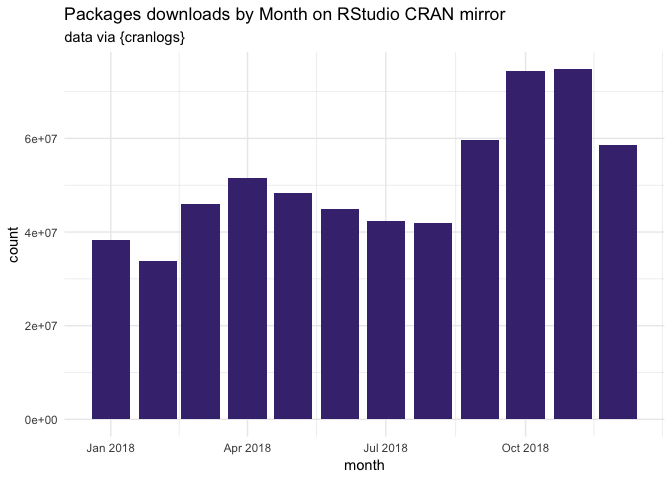
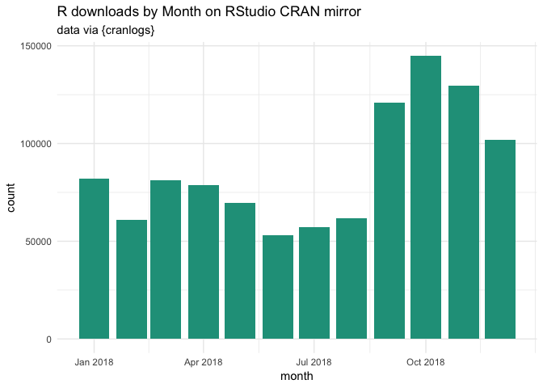

2018 through {cranlogs}
2018 at glance with {cranlogs}.
Let’s load the necessary packages.
library(cranlogs)
library(data.table)
library(lubridate)
##
## Attaching package: 'lubridate'
## The following objects are masked from 'package:data.table':
##
## hour, isoweek, mday, minute, month, quarter, second, wday,
## week, yday, year
## The following object is masked from 'package:base':
##
## date
library(ggplot2)
library(magrittr)
All downloads
We’ll use {cranlogs} to retrieve the data from the RStudio CRAN
mirror.
First, the number of package downloads by day in 2018.
total_dl <- cran_downloads(from = "2018-01-01", to = "2018-12-31")
# Turn to a data.table
setDT(total_dl)
# Round the date to month and week
total_dl[, `:=`(
round_week = floor_date(date, "week" ),
round_month = floor_date(date, "month" )
) ]
How many download in total?
total_dl[, .(total = sum(count))]
## total
## 1: 614548197
Let’s plot this:
random_viridis <- function(n){
sample(viridis::viridis(100), n)
}
total_dl[, .(count = sum(count)), round_week] %>%
ggplot(aes(round_week, count)) +
geom_col(fill = random_viridis(1)) +
labs(
title = "Packages downloads by Week on RStudio CRAN mirror",
subtitle = "data via {cranlogs}",
x = "week"
) +
theme_minimal()

total_dl[, .(count = sum(count)), round_month] %>%
ggplot(aes(round_month, count)) +
geom_col(fill = random_viridis(1)) +
labs(
title = "Packages downloads by Month on RStudio CRAN mirror",
subtitle = "data via {cranlogs}",
x = "month"
) +
theme_minimal()

R download
Let’s now have a look at the number of downloads for R itself:
total_r <- cran_downloads("R", from = "2018-01-01", to = "2018-12-31")
setDT(total_r)
total_r[, `:=`(
round_week = floor_date(date, "week" ),
round_month = floor_date(date, "month" )
) ]
How many download in total?
total_r[, .(total = sum(count))]
## total
## 1: 1041727
Plotting this:
total_r[, .(count = sum(count)), round_week] %>%
ggplot(aes(round_week, count)) +
geom_col(fill = random_viridis(1)) +
labs(
title = "R downloads by Week on RStudio CRAN mirror",
subtitle = "data via {cranlogs}",
x = "week"
) +
theme_minimal()

total_r[, .(count = sum(count)), round_month] %>%
ggplot(aes(round_month, count)) +
geom_col(fill = random_viridis(1)) +
labs(
title = "R downloads by Month on RStudio CRAN mirror",
subtitle = "data via {cranlogs}",
x = "month"
) +
theme_minimal()

Let’s have a look to the number of download by R version:
total_r[, .(count = sum(count)), version][order(count, decreasing = TRUE)] %>%
head(10)
## version count
## 1: 3.5.1 464837
## 2: 3.4.3 174665
## 3: 3.5.0 137886
## 4: 3.4.4 107124
## 5: latest 32642
## 6: 3.5.1patched 32119
## 7: 3.3.3 27992
## 8: 3.5.2 21645
## 9: devel 8543
## 10: 3.2.4 4814
total_r[, .(count = sum(count)), version][order(count)] %>%
head(10)
## version count
## 1: 3.5.1rc 2
## 2: 3.5.2beta 2
## 3: 3.5.2rc 6
## 4: 3.5.0beta 8
## 5: 3.4.4rc 11
## 6: 3.5.0alpha 11
## 7: 3.5.0rc 12
## 8: 2.6.1 13
## 9: 2.8.0 16
## 10: 2.2.1 17
total_r[, .(count = sum(count)), version][order(count, decreasing = TRUE)] %>%
head(10) %>%
ggplot(aes(reorder(version, count), count)) +
coord_flip() +
geom_col(fill = random_viridis(1)) +
labs(
title = "10 most downloaded R versions in 2018 on RStudio CRAN mirror",
subtitle = "data via {cranlogs}",
x = "version"
) +
theme_minimal()

And by os:
total_r[, .(total = sum(count)), os]
## os total
## 1: osx 228573
## 2: win 767319
## 3: src 42725
## 4: NA 3110
And a happy new year 🎉🎉